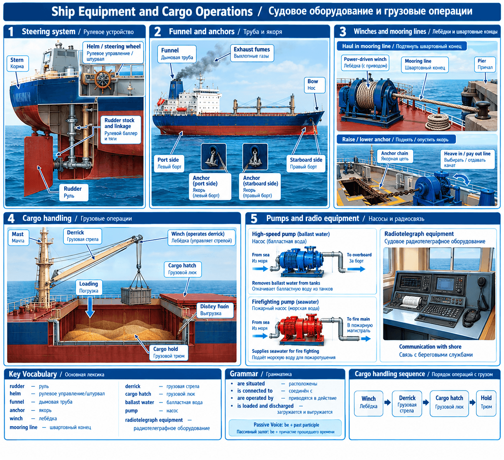
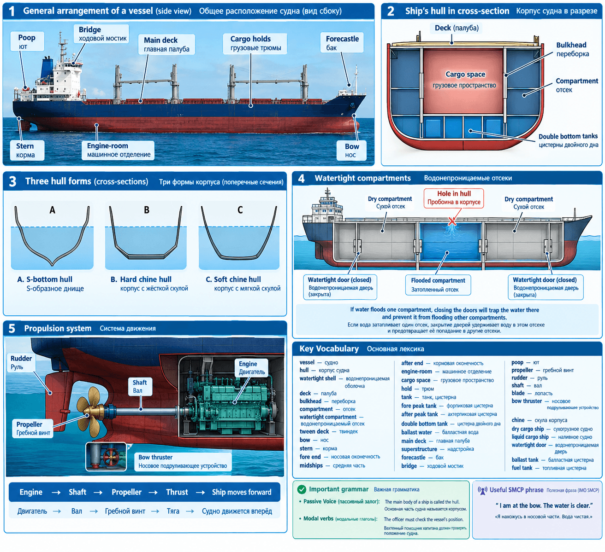

Part 1 — Main Parts of a Vessel: Ship's Hull
Основная часть урока посвящена устройству корпуса судна. Мы рассмотрим формы корпуса, водонепроницаемые отсеки, расположение помещений и работу двигателя с гребным винтом.

Иллюстрация: строение корпуса судна (из учебных материалов)
1. Профессиональная лексика
| English | Перевод | Пояснение |
|---|---|---|
| vessel | судно | Общее профессиональное обозначение судна |
| hull /hʌl/ | корпус судна | Водонепроницаемая оболочка судна |
| watertight shell | водонепроницаемая оболочка | Конструкция корпуса, препятствующая проникновению воды |
| deck | палуба | Горизонтальная конструкция судна |
| bulkhead | переборка | Вертикальная водонепроницаемая или разделительная конструкция |
| compartment | отсек | Изолированное пространство внутри корпуса |
| tween deck | твиндек | Промежуточная палуба, часто для груза |
| bow /baʊ/ | нос | Передняя часть судна |
| stern /stɜːn/ | корма | Задняя часть судна |
| fore end | носовая оконечность | Передняя часть корпуса |
| midships | средняя часть (мидель) | Центр корпуса по длине |
| after end | кормовая оконечность | Задняя часть корпуса |
| engine-room | машинное отделение | Помещение главного двигателя |
| cargo space / hold | грузовой трюм | Пространство для груза (сухогруз) |
| tank | танк / цистерна | Ёмкость для жидкости |
| propeller /prəˈpelə(r)/ | гребной винт | Создаёт тягу для движения судна |
| rudder /ˈrʌdə(r)/ | руль | Управляет направлением движения |
| bow thruster | носовое подруливающее устройство | Помогает перемещать нос вбок |
2. Формы корпуса
В учебном тексте выделены три формы поперечного сечения корпуса:
- S-bottom hull — корпус с S-образными обводами днища.
- Hard-chine hull — корпус с жёсткой скулой (выраженным угловым переходом днище → борт).
- Soft-chine hull — корпус с мягкой скулой (плавный переход).
3. Водонепроницаемые отсеки
Корпус разделён на водонепроницаемые отсеки (watertight compartments). Каждое отделение имеет специальные двери (watertight doors), которые при закрытии изолируют воду.
Пробоина → вода в один отсек → двери закрыты → вода удерживается → остальные сухие.
Это позволяет судну оставаться на плаву даже с пробоиной в корпусе.
4. Расположение частей судна
Типовая последовательность помещений: Fore peak tank → Cargo holds → Engine-room → After peak tank
5. Сухогрузные и наливные суда
| Тип судна | Грузовое пространство |
|---|---|
| Dry cargo ship — сухогрузное судно | holds — грузовые трюмы |
| Liquid cargo ship — наливное судно | tanks — грузовые цистерны |
6. Двигатель и гребной винт
Последовательность передачи движения:
Большинство гребных винтов имеют четыре лопасти (four blades). На больших судах могут быть два или четыре винта; также устанавливают bow thruster — носовое подруливающее устройство для быстрого разворота.
7. Грамматика: Passive Voice (пассивный залог)
В техническом английском пассив используется для описания конструкции и оборудования:
Subject + be + Past Participle (V3)
| Английское предложение | Перевод |
|---|---|
| The main body of a ship is called the hull. | Основная часть судна называется корпусом. |
| The hull is divided into decks. | Корпус разделён палубами. |
| Bulkheads are built between the decks. | Переборки устанавливаются между палубами. |
| The cargo space is divided into holds. | Грузовое пространство разделено на трюмы. |
| The propeller is bolted to the end of the shaft. | Гребной винт прикреплён болтами к концу вала. |
| The bow thruster is located in the bow. | Носовое подруливающее устройство расположено в носовой части. |
Part 2 — Ship Equipment and Cargo Operations
Вторая часть урока посвящена судовому оборудованию (руль, якоря, лебёдки, грузовые стрелы) и грузовым операциям.

Иллюстрация: судовое оборудование и грузовые операции
1. Профессиональная лексика (Часть 2)
| English | Перевод / Пояснение |
|---|---|
| rudder /ˈrʌdə(r)/ | руль — большая плоская металлическая пластина в корме |
| to steer a ship | управлять направлением движения судна |
| hinged /hɪndʒd/ | закреплённый на шарнирах (как дверь) |
| helm /helm/ | рулевое управление / штурвал |
| funnel /ˈfʌnəl/ | дымовая труба |
| anchor /ˈæŋkə(r)/ | якорь |
| port side / starboard side | левый борт / правый борт (независимо от направления движения) |
| winch /wɪntʃ/ | лебёдка — выбирает или травит трос / канат |
| derrick /ˈderɪk/ | грузовая стрела (на мачте) |
| cargo hatch | грузовой люк (через него груз в трюм) |
| mooring line | швартовный конец (трос для привязки к причалу) |
2. Важные различия терминов
Rudder — сам руль в корме. Helm — система управления. Steering wheel — непосредственно штурвал на мостике.
Starboard side — правый борт (в том же направлении). Эти обозначения постоянны, даже если судно идёт назад.
3. Грузовые операции
- Derricks (стрелы) работают от winches (лебёдок).
- Груз загружают / выгружают в holds через cargo hatches.
- Лебёдки также поднимают / опускают якоря (raise / lower anchors) и выбирают / травят швартовные концы.
4. Грамматика: Passive Voice (продолжение)
| Английское предложение | Перевод |
|---|---|
| The rudder is connected to the helm. | Рулевое устройство соединено с системой управления. |
| Funnels are situated near the bridge. | Дымовые трубы расположены рядом с ходовым мостиком. |
| Derricks are operated by winches. | Грузовые стрелы приводятся в действие лебёдками. |
| The cargo is loaded into the holds. | Груз загружается в трюмы. |
| The anchors are raised by winches. | Якоря поднимаются с помощью лебёдок. |
5. Полезные словосочетания
| English phrase | Перевод / Значение |
|---|---|
| raise the anchor / lower the anchor | поднять / опустить якорь |
| haul in a mooring line | выбрать швартовный конец |
| pay out a mooring line | вытравить швартовный конец |
| load cargo / discharge cargo | загрузить / выгрузить груз |
| pump out ballast water | откачивать балластную воду |
| pump seawater in case of fire | подавать морскую воду при пожаре |
| keep ships in constant touch with the rest of the world | поддерживать постоянную связь судов с остальным миром |